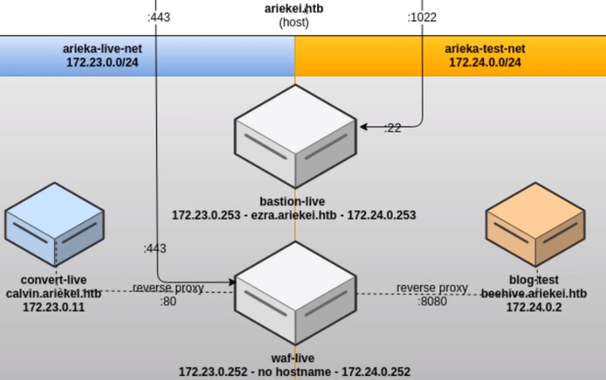

Viewing SSL cert to pivot to test site (it's based upon HOST header/virtual host routing). Ensure check of Cert > Extensions > Certificate Subject Alt Name
Diagram of layout so you know what's happening at a high level:

Another thing to test with uploads is if the site is using ImageMagic. ImageMagic has had several vulnerabilities over the years. Many are 'out of band' and you wont' see the results, so account for that accordingly.
no ifconfig? no ip? can always check /proc/net/tcp /proc/net/udp
or
cat /proc/net/fib_trie and
cat /proc/net/arp
a lot of the binaries are not available in Docker builds because they are not needed. Will need to learn how enumerate and perform functions manually. Where does ip a pull data from? where does arp pull data from? etc etc
Docker:
pull information from containers
/common/containers/
wget can pass headers. --use-agent='shellshock'
SSH Explanation good explanation in the video at 39:30
normally you can issue: ssh -L yada yada
If you're in an ssh session, you have access to easy peasy ssh tunneling
on a NEW LINE if the VERY FIRST characters you enter are ~C
you drop into an ssh> prompt
ssh>
ssh> help
etc, and you can add a port forward from here
so if you are 127.0.0.1 and you are SSHd into 192.168.1.2
ssh> -L 8001:192.168.1.3:80
your Kali box 127.0.0.1 is now listening on 8001 and it's being forwarded through the ssh target 192.168.1.2 to 192.168.1.3:80
Now, let's set up another port forward to get requests back from another port
so if you are 127.0.0.1 and you are SSHd into 192.168.1.2
ssh> -R 8002:127.0.0.1:8003
(this is slightly confusing, but)
The box you are SSHd into (192.168.1.2) will listen on ITS local host on 8002 and will take everything from ITS 8002 and forward it through the SSH connection TO kali local (127.0.0.1) 8003.
With the two commands above, we will be able to command inject a shell through the SSH connection on a third host back to Kali:
kali:8001 -> 192.168.1.2:80 -> victim:80
victim:80 -> 192.168.1.2:8002 -> kali:8003 shell
Make sure you adjust your reverse_shell accordingly. In this case, you want to call back to 192.168.1.2:8002. And then listen on your Kali box on 8003.